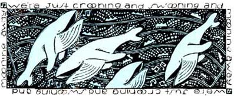
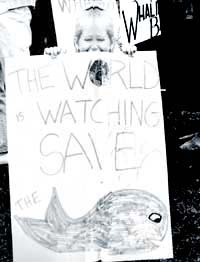
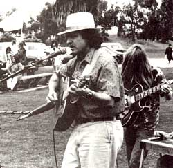

EARTH DIARY
Having a whale of a time at the annual IWC meeting.
THE INTERNATIONAL WHALINGCommission (IWC) met in early June at the Hyatt Island a hotel in San Diego. This marks the first time the commission has held its annual meeting in this country in nearly 20 years. Back then, the United States was still killing whales, as were perhaps two dozen other countries. Now, with a few exceptions, killing whales is illegal. That could change, as soon as next year.
The hotel sits on Mission Bay, a strangely artificial estuary manicured from the former delta of the San Diego River. The banks are rip rapped, with occasional stretches of sand beach. Neither a native plant nor a weed grows for miles around. (San Diego must employ as many gardeners as Hollywood does hairdressers.) The 15-story tower of the hotel dominates the landscape for miles.
Commissioners trickle in over the weekend, joining scientists who have been conferring and wrangling for two weeks. Along with representatives from member nations come observers from nongovernmental organizations (NGO's) like Greenpeace, the International Foundation for Animal Welfare, and the Humane Society of the United States. Many of these people have been attending IWC meetings since whale conservation became a popular cause among conservationists and wildlife enthusiasts in the early 1970s.
Sidney Holt is the patriarch of the whale savers. He's a marine biologist-white haired, rosy cheeked, British, and blunt-spoken. Holt has been studying whales and fighting for their protection for three decades.
At a press conference at the opening of the meeting, Holt stares grim-faced into a bank of television cameras. "Ten years ago we argued that whaling should stop because the whales were in danger of extinction. I'm not sure I actually believed that then. I do now."
When the commission decreed an end to commercial whaling-the moratorium was issued in 1982, to take effect at the end of the 1985 season-- the scientists' best guesses had put the population of fin whales in the Antarctic at 100,000, down from an estimated 500,000 before whaling began in earnest last century. The new data released by Holt indicate there may be only 4,000 fin whales in those waters.
The story of the blue whale is worse: When that animal was protected from killing in 1965, scientists thought there were something like 11,000 left of an original population of around 250,000. "Now we think the blue whales number somewhere between 200 and 1,100-probably around 500," Holt said. "In seven years, shipboard observers saw 23 schools of blue whales. A school of blue whales is one whale, sometimes two. In seven years, covering more than 40,000 miles of ocean, the observers saw around 30 blue whales. That's all."
Across the road from the Islandia the NGO's are gathering. In addition to those mentioned above are journalists from Friends of the Earth and Earth Island Institute, who will publish a newsletter that reports the day's news. That's in direct contravention of the IWC's rules, which ban reporters from all but the opening and closing ceremonies.
This uninvited newspapering began in 1972 at the United Nations' historic environmental conference in Stockholm. The present series will make up volume 47. This year, for the first time, the newspaper staff is using computers and desktop publishing programs, which will supplant a half dozen volunteers who used to work half the night typing and retyping stories and creating headlines by rubbing letters one at a time off plastic sheets.
At five o'clock Sunday afternoon, 40 observers arrange themselves in a small motel room to plan strategy. David McTaggart, the chairman and founder of Greenpeace, fidgets in the comer, trying to keep the conversation on track. McTaggart is one of the shrewdest politicians in the international environmental arena --a recent chum, it's rumored, of Mikhail Gorbachev. He's short, tan, and fit. He's past 60 but could pass for 40. Easily.
The prominent issue at this year's meeting is expected to be an attempt by Japan to evade the moratorium by creating a new category of whaling that is somewhere between commercial whaling (which is illegal at present) and aboriginal whaling (which natives in Alaska, Siberia, and Greenland carry on legally). Japan wants the commission to recognize and approve what it calls "small type whaling"whaling conducted in small boats from coastal villages. Though many of the whale supporters express sympathy with the littoral dwellers who have had to stop whaling, none shows any sign of supporting a quota for them.
Japanese scientists have already admitted that more than one-third of the area's population of Dall's porpoises-nearly 40,000 animals-was killed last year, and hint that the blame belongs to the IWC for imposing the moratorium. People mutter about blackmail.
"Scientific," or "research," whaling is expected to generate some angry words as well. Since the moratorium became effective, Japan, Norway, and Iceland have issued per mits to themselves to kill whales for research (all perfectly legal under the IWC's most accommodating rules). Roger Payne, who gave the whale conservationists an immeasurable boost fifteen years ago when he released the record "Songs of the Humpback Whale," is utterly scornful of this practice.
"The boats are the same, the whalers are the same. They work for the same companies; they sell the meat to the same people. This isn't science; it's commercial whaling by another name. There's nothing important you can learn from a dead whale that you can't learn from a live one," Payne tells several hundred people gathered on the lawn outside the meeting. Country Joe McDonald, natty in red shirt and white Panama hat, listens attentively, awaiting his turn to sing.
At the back of room 624 in the Dana Inn, nearly hidden behind a bank of pale gray boxes that issue faintly purring noises, sits a man with lemon-custard-colored hair with jet black roots. He is David Rinehart, production expert and computer nerd. The first issue of the newsletter, ECO, is getting its pajamas on. Soon, two people speed into the night to deliver artwork to the printer.
A head appears around the door jamb, offering to read proof. "Now is not the time to proofread," says Rinehart solemnly. "Now is the time to drink beer."
The commission's meeting proceeds deliberately. There are subtle shifts of power evident, as when St. Lucia sides with Japan on a procedural vote and France abstains. The conservationists won the moratorium in 1982 by recruiting new members for the commission in the early '80s-membership rose from 15 to 40 in that period, with most of the newcomers joining to crusade against whaling. Now, many of the late joiners are interested in other matters and have stopped paying their dues. Only 27 nations sent delegations to this year's meeting, and several of them said they would not return next year, partly because dues are going up 45%. The attrition is entirely from the antiwhaling bloc, which has conserv ationists worried.
The meeting eventually draws to a close Friday afternoon, with no resolution of anything. The commission has again deplored the scientific whaling programs of Norway, Iceland, and Japan, but in such a way that has the NGO's uneasy. The denunciation seems less fervent than in past years, tepid enough for the Japanese whalers' public relations specialist, Alan Macnow of New York City, to claim victory in one of his daily press releases. (Yes, spin doctoring has arrived at the IWC.) Macnow is representing an NGO himself this year: Friends of Whalers. It has one member. Alan Macnow.
The postmortem finds the conservationist observers subdued. It's going to be difficult next year to fend off requests from Japan, Norway, and Iceland for permits to kill a few hundred minke whales, the last of the oceans' whales that are still abundant.
The conservationists break down into two groups: One thinks no whale should be killed no matter how plentiful its race; another thinks a modest harvest is tolerable, so long as the survival of the species is not endangered. Committees are formed. Meetings are planned. Next year's IWC meeting will be in the Netherlands, and the following year's in Iceland-definitely hostile territory. The long, grinding battle to save the whale continues. The question is, have we already waited too long?
Tom Turner, a writer and editor with more than 20 years' experience in the environmental field, is staff writer for the Sierra Club Legal Defense Fund, an independent environmental law firm that represents many organizations across the country. It is supported by private donations. For more information, write Sierra Club Legal Defense Fund, 2044 Fillmore St., San Francisco, CA 94115.
|
 Whale song last from five to 15 minutes. Many have rhyming sounds, which scientists believe may be mnemonic devices to help the whales learn and remember the songs.. |
 Nongovernmental observers and publishers at the International Whaling commission meeting came in a variety of types and sizes. |
 Country Joe McDonald, a longtime friend of aquatic mammals, left the Fish in San Francisco to sign praises for whales in San Diego. |